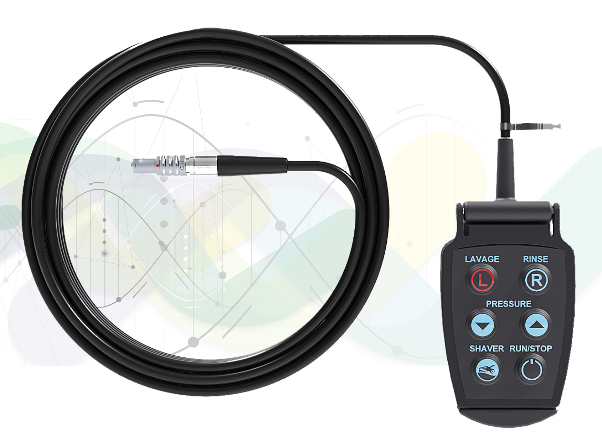
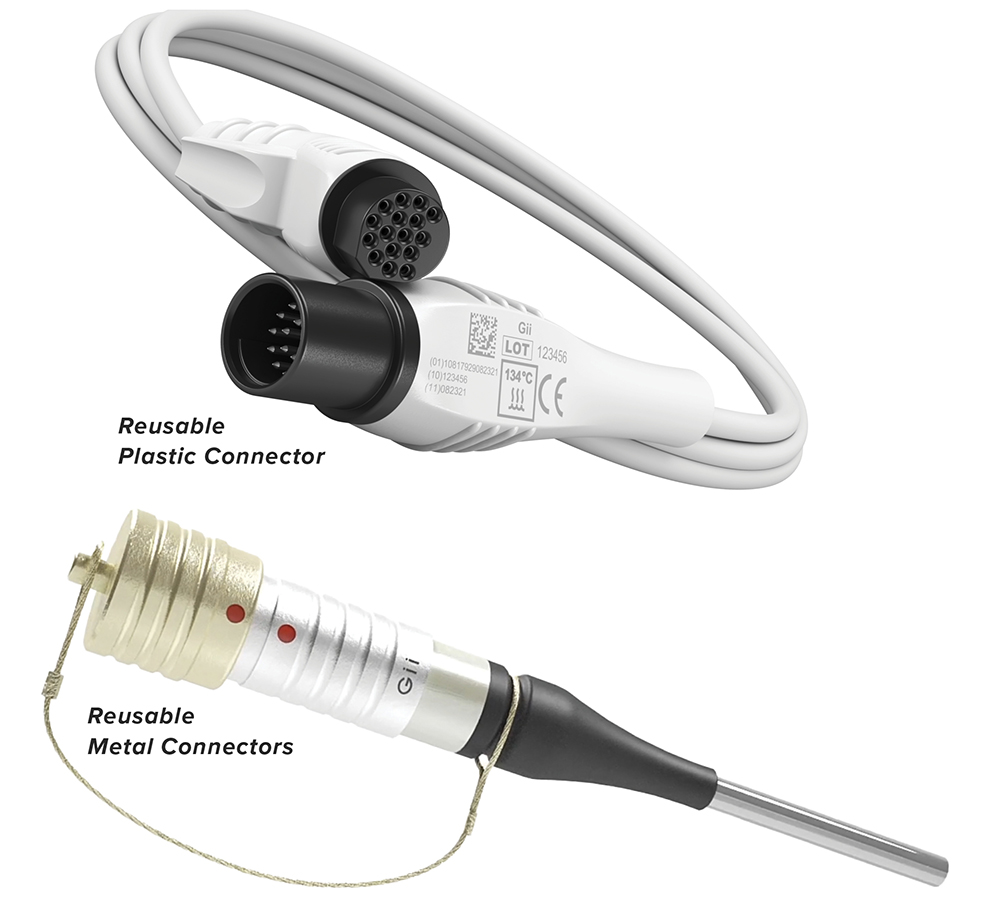
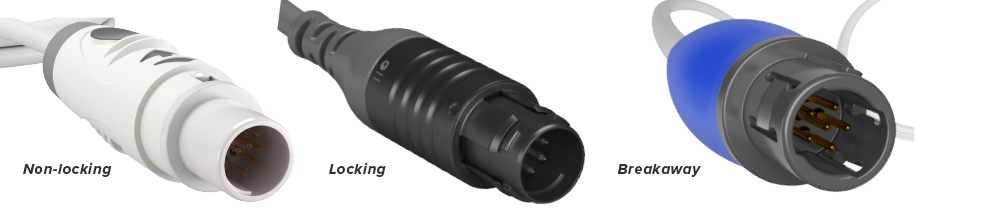
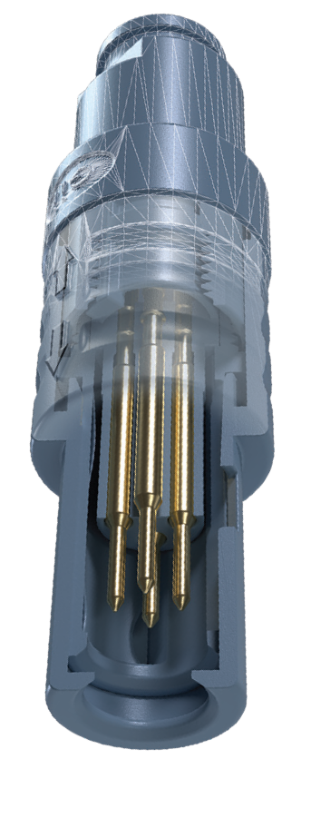

Reusable medical connectors require advanced designs, premium materials and components, and complex manufacturing and validation processes.
These connectors are critical components in Energy-Based and Diagnostic Medical Devices, ensuring reliability and safety in demanding medical applications. Reusable connectors can be designed into the handpiece or attached to a full-length cable that’s hardwired into the handpiece and plugs directly into the device and/or generator.
The selection process should start by understanding the connector’s specific application and user experience for the doctor/hospital, with patient safety at the forefront.
The cycle count and sterilization strategy will heavily influence the overall design, material, and component selection. Typical sterilization cycle counts can be anywhere from 10 to 10,000 cycles and will depend on the type of sterilization process. Sterilization can consist of Isopropyl wipes, hydrogen peroxide, and/or heat and steam.
It’s common to consider how the connector and cable assembly will be handled in the field along with any patient risk. i.e. storage, sterilization process, and daily handling.
Once you’ve determined the specific application and user experience, you are now ready to pursue design considerations for your reusable medical connector.

Critical elements of a reusable medical connector:

Materials
Plastic connectors provide a more competitive price point over metal and are best for lower cycle counts (50 to 100). You can leverage plastic connectors for cycle counts over 100, but these are typically for simple wipe-down sterilization and handling processes.
- PESU, PEI, and/or PSU are common connector materials to consider.
- Some benefits of plastic connectors involve patient safety and minizing risk of electrical shock.
- Heat and steam sterilization can compromise the integrity of plastic connectors over time, causing them to become fragile and break.
Metal connectors are best for cycle counts over 100 utilizing heat and steam sterilization.
Mating Style:
Depending on patient safety requirements, you’ll want to choose between locking, non-locking, and breakaway connector mating styles.
Non-locking connectors will prevent damage. Users often pull on the cable to disconnect the connector from the generator/console. This will mitigate the number of failures and service requests.
Breakaway connectors provide a slightly more sophisticated design and enhanced user experience over non-locking while maintaining a higher insertion and extraction force. A breakaway option will also mitigate the number of failures and service requests.
Locking connectors offer the most sophisticated designs with additional components and prevent any accidental disconnections during the procedure.


Contacts:
When the number of electrical contacts per connector is considered high, edge cards (PCB style – FR4) can help provide greater reliability.
Depending on your product application, you may require pneumatic and fluidic contacts that handle gas, saline, and suction.
Fiber contacts for imaging and sensing are becoming more prevalent and increasingly important for many emerging technologies.
Before selecting any of the options, patient safety and performance requirements should be considered.
Global Interconnect is an ISO13485 and FDA-registered contract manufacturing partner with over 30 years of helping medical device OEMs achieve the ideal connector solution for their devices.
Chat with one of Global Interconnect’s engineers today for a free consultation!